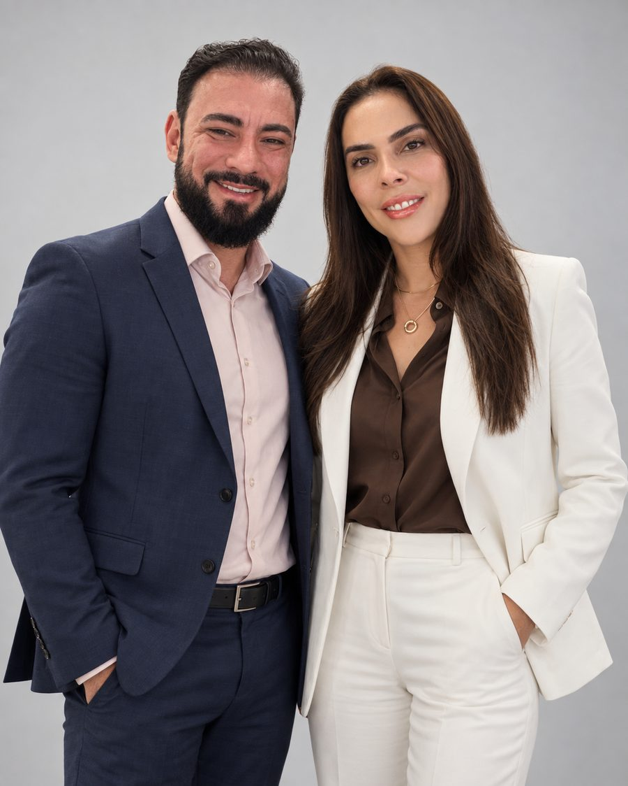
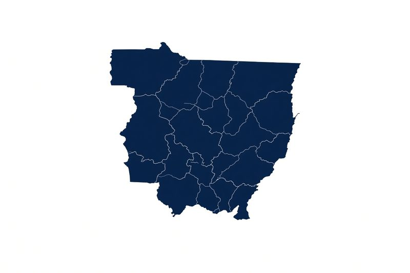

Uma empresa construída de perto por seus sócios — e uma atuação que alcança o RH, a prefeitura e a operação mais complexa.
Desde a fundação, a B&C cresceu com a presença direta dos seus sócios na operação e nas decisões estratégicas. A gestão executiva é conduzida por uma mulher, trazendo uma visão empresarial que une organização, crescimento e cuidado com as pessoas, ao lado de uma direção médica especializada em Medicina do Trabalho e Perícia Médica.

A B&C atua hoje como perícia médica administrativa de nove municípios — decisão técnica e imparcial, dentro do RH de quem administra o serviço público.
O RH não decide sozinho. Decide com a B&C.
A atuação da B&C também alcança a gestão de conflitos complexos dentro dos departamentos de Recursos Humanos. Atualmente, realizamos perícia médica administrativa para nove municípios, apoiando o RH na análise de afastamentos, atestados, capacidade laborativa e situações que exigem decisão técnica e imparcial.
Ao longo dos anos, a B&C passou a atender empresas de diferentes portes e setores, incluindo grandes operações de mineração, frigoríficos, agroindústria, hotelaria, turismo, comércio e serviços. Essa diversidade trouxe à equipe experiência prática para compreender riscos, rotinas e necessidades muito diferentes — do trabalhador administrativo às operações de maior complexidade ocupacional.
Quanto mais diferentes são as empresas que atendemos, maior se torna a nossa capacidade de compreender o trabalho de verdade.
Sua empresa tem uma situação de saúde ocupacional para resolver? Fale direto com a equipe da B&C.
Falar com a B&C no WhatsApp Voltar ao site